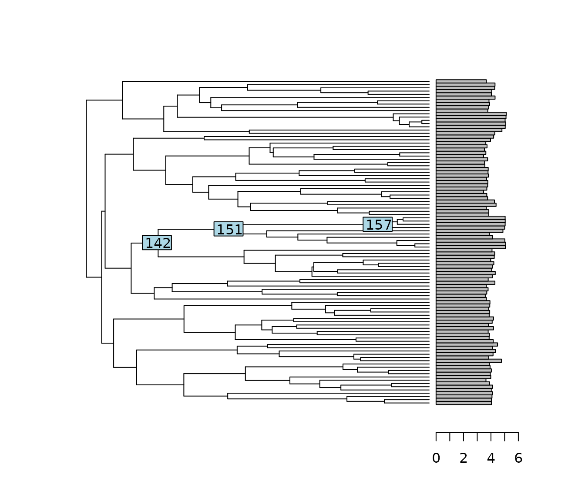
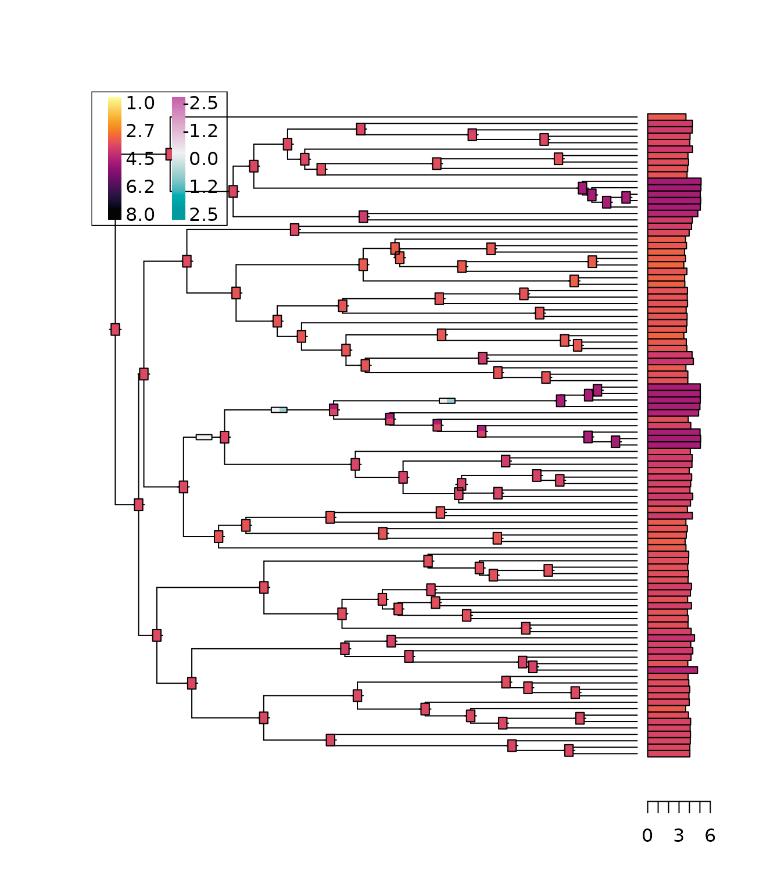

lizards.RmdThe dataset is taken from Mahler et al. (2013)1. It is embedded in the
package, so that we can load it and plot it using ape base
functions.
library(cauphy)
data(lizards)
attach(lizards)
plot(phy, show.tip.label = FALSE, x.lim = 65)
phydataplot(svl, phy, scaling = 2)
nodelabels(node = c(142, 151, 157))
The phylogeny is a time calibrated tree, and the trait is the natural log-transformed species average snout-to-vent length (in centimeters) of lizard species.
The fitCauchy function can fit a Cauchy process (CP) to
the data, using the REML by default.
cauchy_reml <- fitCauchy(phy, svl, model = "cauchy", method = "reml")
cauchy_reml
#> Call:
#> fitCauchy(phy = phy, trait = svl, model = "cauchy", method = "reml")
#>
#> AIC logLik (restricted)
#> -4.207 3.104
#>
#> Parameter estimate(s) using REML:
#> dispersion: 0.004476062The print method shows the main information of the plot,
including the (restricted) likelihood and AIC values, and the parameter
estimates.
Estimated confidence intervals for the parameters can be obtained through the numerical computation of the Hessian.
confint(cauchy_reml)
#> Approximated asymptotic confidence interval using the Hessian.
#> 2.5 % 97.5 %
#> disp 0.003178267 0.005773856We can also plot the profile likelihood around the infered parameter value, in order to check that the numerical optimization went well, and that the likelihood computation did not encounter some numerical robustness issues.
Here, the likelihood is smooth, and has a clear maximum in the estimated dispersion value.
It is also possible to directly fit the maximum likelihood, instead of the REML, in this case with a fixed root.
cauchy_ml <- fitCauchy(phy, svl, model = "cauchy", method = "fixed.root")
cauchy_ml
#> Call:
#> fitCauchy(phy = phy, trait = svl, model = "cauchy", method = "fixed.root")
#>
#> AIC logLik
#> -4.884 4.442
#>
#> Parameter estimate(s) using ML:
#> dispersion: 0.00450843
#> root value: 3.9951In this case, both the root value and the dispersion are estimated using ML, and their confidence interval can also be approximated using the Hessian.
confint(cauchy_ml)
#> Approximated asymptotic confidence interval using the Hessian.
#> 2.5 % 97.5 %
#> x0 3.787157040 4.203042999
#> disp 0.003207639 0.005809221Note that in this case with many tips, the difference between the ML and REML estimates of the dispersion are small.
Finally, we can also plot the profile log-likelihood in both estimated parameters (the other parameter being fixed to its optimal value). Here again, the likelihood surface seems to be smooth and have a clear maximum.
We can use either ML or REML for model selection, comparing the AIC value of the Cauchy fit with those of Gaussian models.
Here, we use phylolm to fit Gaussian models, which uses
an ML estimate (with fixed root). We only compare the CP with the BM, OU
and EB without measurement error for simplicity, but results for other
Gaussian models are similar.
library(phylolm)
bm_ml <- phylolm(svl ~ 1, phy = phy, model = "BM")
ou_ml <- phylolm(svl ~ 1, phy = phy, model = "OUfixedRoot")
eb_ml <- phylolm(svl ~ 1, phy = phy, model = "EB")
data.frame(model = c("BM", "OU", "EB", "CP"),
AIC = c(AIC(bm_ml), AIC(ou_ml), AIC(eb_ml), AIC(cauchy_ml)))
#> model AIC
#> 1 BM 13.400807
#> 2 OU 15.400810
#> 3 EB 14.571939
#> 4 CP -4.883842Here, the Cauchy Process is clearly selected by the AIC score.
For ancestral trait reconstruction, we compute the posterior trait density conditionally on the tip values, given a fitted object.
To do ancestral state reconstruction, we use the REML fitted object. The ML fitted object could also be used, and would give similar results, except for the root, which can be reconstructed in the REML case, but is fixed in the ML case.
anc_reml <- ancestral(cauchy_reml, n_values = 200)We reconstruct the posterior density of each internal node on a grid of values. A default grid with \(100\) is used if un-specified, but it can be tailored to specific needs by raising the number of points on the grid, or directly specifying a custom grid of values. By default, the reconstruction is carried on all internal nodes, but a subset of nodes of interest can be specified.
The posterior density can be plotted for specific nodes of interests. Here, node \(151\) exhibits a bi-modal behavior, between “large” and “small” values of the trait at this internal node, representing two possible evolutionary scenarios.
Ancestral branch increment reconstruction computes the posterior density of the increment of a trait on each branch of the tree. Large branch increments can be associated with shifts on the trait value.
The process is similar to ancestral reconstruction, but is computationally more expensive. A built-in option can allow for parallelization of these computations. To avoid long run times, we only reconstruct the increment on a few chosen branches here.
We recover here a behavior that is complementary to the node reconstruction, with the edge ending at node \(151\) being bi-modal, with modes around \(0\) (no change on the edge) and \(1\) (shift in the log trait space).
We can then plot these schematics of these reconstructions on the tree, using thermo plots. To avoid any clutter, we only plot a few of them here.
plot_asr(cauchy_reml, anc = anc_reml, inc = inc_reml,
show.tip.label = FALSE,
width.node = 0.8, height.node = 1.8,
width.edge = 1.5, height.edge = 0.8)
In this representation, trait or increment values are mapped to a
common color scale. Each thermo plot represents the reconstructed node
or branch posterior traits, with colors mapped to the modes of the
distribution, and a width proportional to their relative weights. The
function inherits from all the ape::plot function, and can
be customized accordingly.
Mahler, D. Luke; Ingram, Travis; Revell, Liam J.; Losos, Jonathan B. (2013), Data from: Exceptional convergence on the macroevolutionary landscape in island lizard radiations, Dryad, Dataset, https://doi.org/10.5061/dryad.9g182↩︎